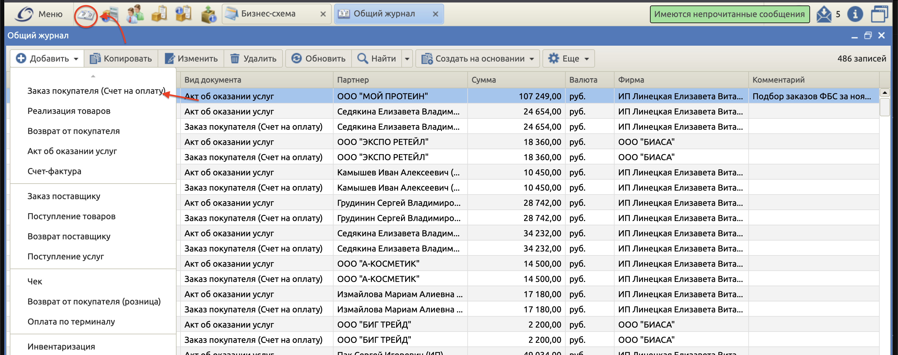
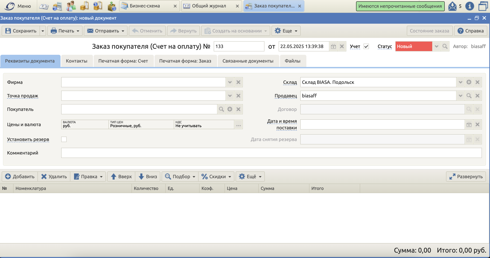

Вообще, мы неполноценно используем функционал BigBird, потому что этот софт не только
про счета. Там достаточно обширный функционал. Однако чему научился, то и распишу:
1. Заходим в BigBird и авторизируемся (пароли и явки получайте у сотрудников склада)
2. Нажимаем на "Общий журнал", а затем "Добавить" > "Заказ покупателя (счет на оплату)"

3. Заполняем поля по порядку.

Фирма - выпадающий список. Из доступных есть ИП Линецкая Е.В ( основной акк)
и ООО "БИАСА". По стандарту выбираем ИП Линецкая. ООО "БИАСА" выбираем в виде исключения, когда договор
с партнером заключен с ООО "БИАСА"
Точку продаж можно не выбирать
Покупатель - выпадающий список. Если клиент ранее паковался у нас - выбираем из списка.
Если клиент новый - то создаем (нажимаем на лупу справа в поле)
Все остальное в верхней таблице можно не трогать
Ниже заполняем оказанные услуги. По аналогии с Покупателем, если услуга ранее оказывалась, она будет
в выпадающем списке. Если нет - создаем через лупу
Ниже пример заполнения счета
После его заполнения - нажимаем "Сохранить", а затем - "Печать">"Счет"
Скачивается готовый счет, который можно отправить клиенту. Однако следует упомянуть еще создание акта к
счету
Для создания акта к счету - нажмите "Создать на основании" > "Акт"
Создав акт отправляйте счет и акт пачкой клиенту на почту или в тг